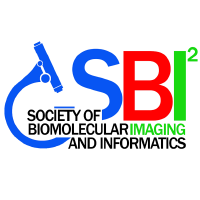

SBI² 2026 Boston
Welcome to SBI² 2026! Join us November 2–4 at the Renaissance Boston Seaport District. Use the links below to navigate conference information.

Welcome to SBI² 2026! Join us November 2–4 at the Renaissance Boston Seaport District. Use the links below to navigate conference information.